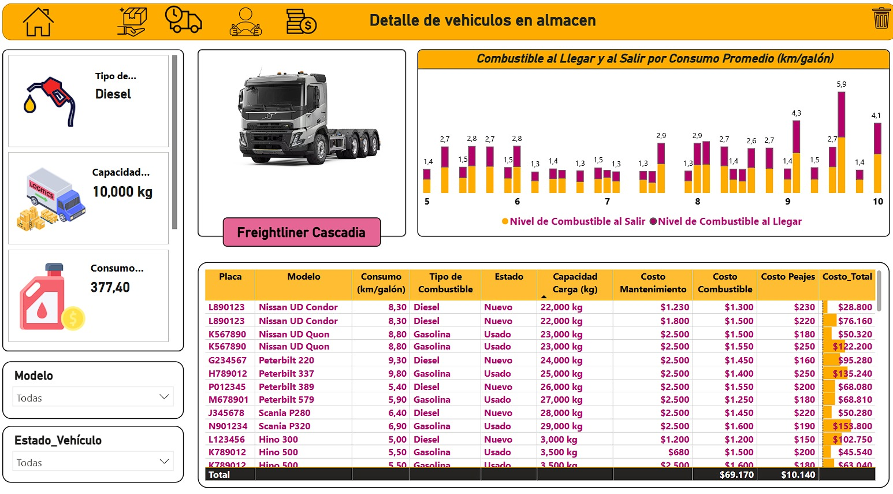
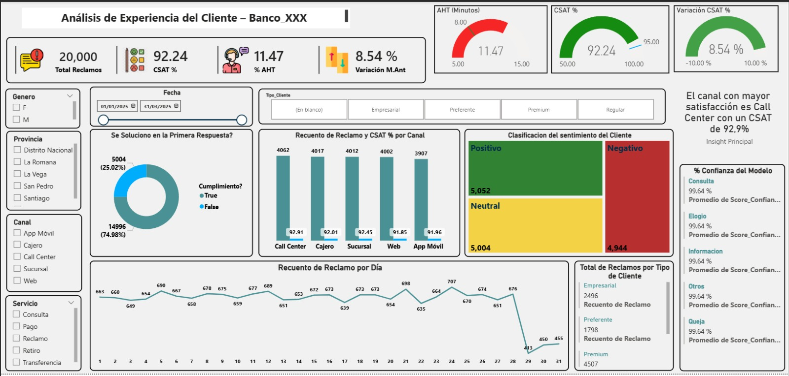

Inteligencia Aplicada a la Industria
No mostramos gráficos bonitos; mostramos soluciones que han resuelto problemas operativos complejos.

Gestión de Flotas y Rentabilidad Operativa
Solución analítica diseñada para optimizar rutas de distribución y auditar el desempeño del transporte. Integra indicadores clave como rentabilidad por viaje, consumo de combustible y mapeo de entregas, facilitando el control de costos y la eficiencia logística integral.
Ver interactivo
Control y análisis de sentimientos de clientes
Herramienta estratégica para medir la lealtad del usuario (NPS) e identificar rápidamente oportunidades de retención. Facilita la toma de decisiones gerenciales con una visión clara del servicio, apoyada en una interfaz 100% a la medida creada con SVG y HTML integrado en DAX.
Ver interactivo
Inteligencia de Voz del Cliente
Implementación de un modelo de Procesamiento de Lenguaje Natural (NLP) que lee y clasifica automáticamente miles de comentarios en quejas, consultas o elogios, cruzando esta data con el nivel de satisfacción (CSAT) en tiempo real.
Ver interactivo